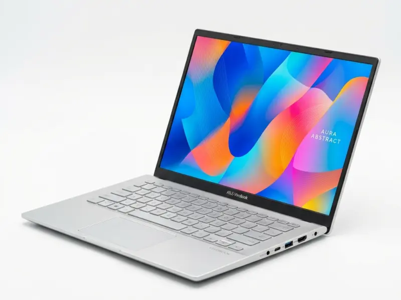

🔍 Click pentru mărireASUS Vivobook 15
Laptop ASUS Vivobook 15 cu procesor Intel Core i5-1335U, 16 GB RAM, SSD 512 GB și ecran 15,6" Full HD, potrivit pentru facultate și birou.
2.799,99 lei
Specificații importante
- Procesor: Intel Core i5-1335U (10 nuclee, până la 4,6 GHz)
- Memorie RAM: 16 GB DDR4 (extensibil la 24 GB)
- Stocare: SSD 512 GB M.2 NVMe PCIe
- Ecran: 15,6" Full HD (1920 × 1080) mat anti-reflexie
- Greutate & Baterie: 1,7 kg, baterie 42 Wh (6-7 ore)
Descriere
ASUS Vivobook 15 este un laptop subțire și ușor (1,7 kg), gândit pentru studenți și utilizare de birou. Tastatura are bloc numeric, iar balamaua se deschide la 180°.
Performanță
Procesorul Intel Core i5-1335U cu 10 nuclee și memoria de 16 GB oferă suficientă putere pentru multitasking, documente și aplicații de videoconferință.
Ecran și conectivitate
Ecranul de 15,6" Full HD are finisaj mat anti-reflexie. Laptopul include Wi-Fi 6E, USB-C, două porturi USB-A și HDMI.
Întrebări frecvente
Este ASUS Vivobook 15 bun pentru facultate?
Da. Procesorul Intel Core i5-1335U și cei 16 GB RAM rulează fluent Office, browserul cu multe taburi, Zoom și programare de bază.
Cât ține bateria la ASUS Vivobook 15?
Bateria de 42 Wh oferă aproximativ 6-7 ore de utilizare obișnuită (navigare web și documente).
Se poate mări memoria RAM la ASUS Vivobook 15?
Modelul are 8 GB RAM lipiți pe placă și un slot liber ocupat de 8 GB; memoria poate fi mărită până la 24 GB prin înlocuirea modulului din slot.